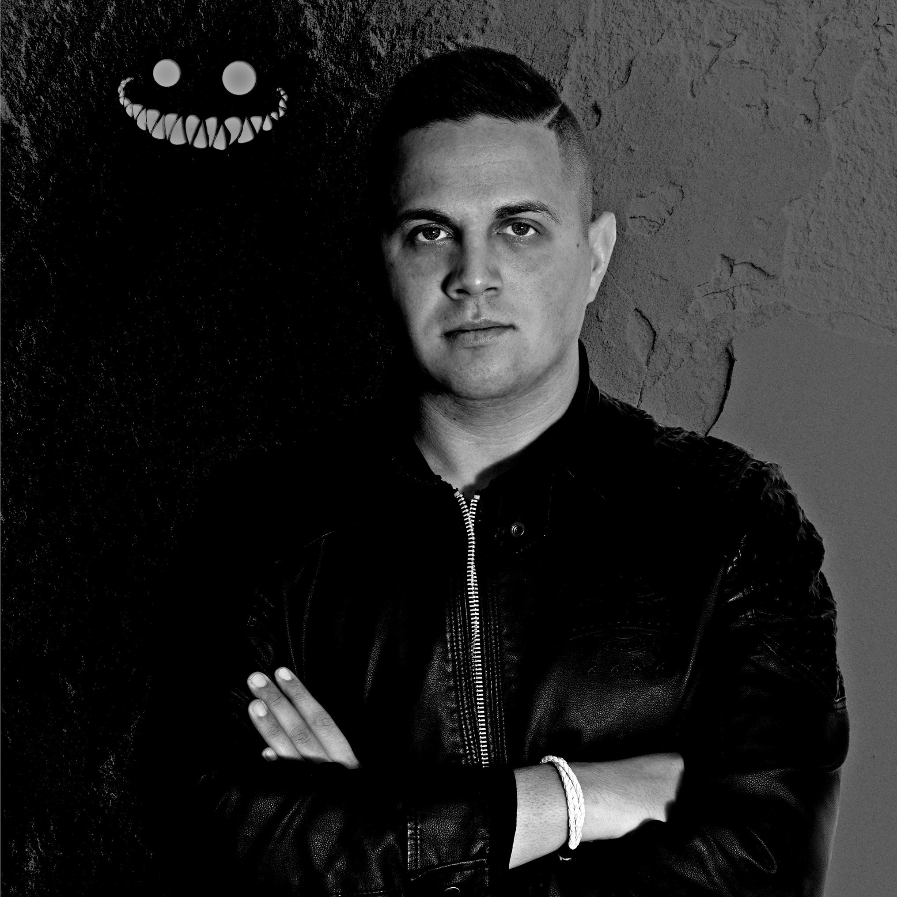

OldMeg.hu
Balázs

Márió
Dorka
-
Special skills:
With experience in the financial sector, I have developed a precise and diligent work ethic. - Work history:
I have worked for 2 years in the economic sector, gaining skills at General Electric, KPMG, and Deloitte. - Strengths:
I possess strong skills in English, social interaction, and analytical thinking. - Weakness:
My stubbornness and impatience are areas for improvement. - Motivation:
I believe investing in IT knowledge is the most useful for the financial industry. - Education:
I just finished a Bachelor's degree in Economics at BME from 2019-2023 Jan. - Hobbies:
I enjoy playing tennis and chess in my free time.
- Special skills:
DevOps engineer mindset, I want to understand how everything works and is used. - Work history:
10 years Senior Sales Representative at Hovány Dél-Alföld Kft. - Strengths:
Quick learning, great affinity for IT, strong communication skills. - Weakness:
Impatience, stubbornness, aggressive speech style, tantrums. - Motivation:
T has been and will continue to be an integral part of my life. When I started working as a salesperson, I took a wrong turn in my career. This should define the rest of my life - Education:
Computer Engineer degree from SZTE JPK (I didn't get anything useful there). - Hobbies:
Video games, streaming, music composition, creating design elements (image, video).
- Special skills:
organizational ability, typing and shorthand practise, good complaint handling skills - Work history:
Becher&Torma Tax Solutions Lltd., ALDI Hungary, Camp Nock-A-Mixon (Pennsylvania, USA), FoodPanda - Strenghts:
patient, creative, open-minded - Weakness:
perfectionist, sometimes need validation, bad time management - Motivation:
IT is a continuous learning opportunities, using varied and different skills needed for it - Education:
Budapest Business School- Business Administration and Management (Bsc) - Hobbies:
hiking, classical music